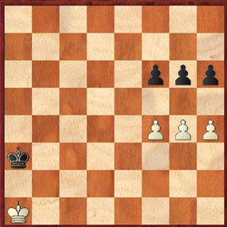

Workshop 1In this page you will find brief descriptions of what went on in the first workshop. This is not meant to be a replacement for the workshop, but rather a reference. If you would like a more detailed explanation on topics covered in this page, please contact Charlie Won with your questions.Here are some endgame positions/ideas that were looked at: White to play and win: Plans of g5 followed by h5 or f5 to create a passed pawn. What's the game result in the next 2 positions? (White to move)  Draws. Trick mentioned above allows both to queen. What's the game result? (White to move) White to play and win (has ideas of h5 followed by e5 in order to queen w/ check on f8 or else get mated if 'simultaneous' queening occurs). White or Black to move and White to win: Use Opposition. White to move and reach f8, g8, or h8: Idea: Use opposition and side maneuvers. Sample Solution: 1. Kb2 Kg8 2. Kc2 Kf8 3. Kd2 Kg8 4. Ke2 Kf8 5. Kf2 Kg8 6. Kg2 Kh8 7. Kf3 Kh7 8. Kf4 Kg7 9. Kg5 Kh7 10. Kf6 Kg8 11. Kg6 Kh8 12. Kf7 |
|
Meetings this week (4/3): Tuesday: UC Caffee Wednesday: UC Caffee Times: 6:30pm - 9:30pm |